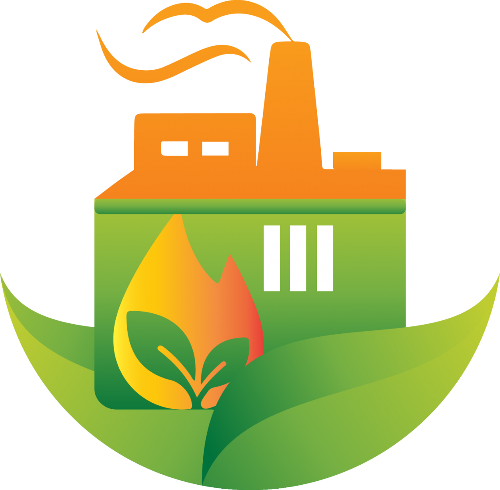
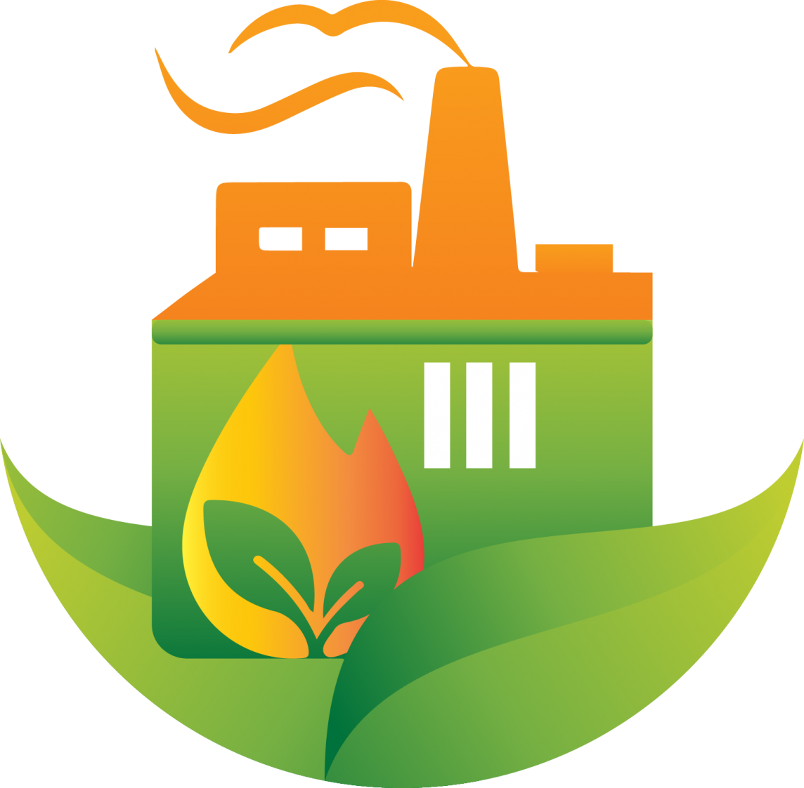

Energia Limpa e Acessível a todos!!
O que é energia limpa?
Energia Limpa é aquela energia que não libera na atmosfera gases
poluentes, causadores do efeito estufa, durante seu processo de produção e consumo.
As principais fontes de energia limpa, são:
 Energia solar: Derivada do Sol.
Energia solar: Derivada do Sol.
 Energia eólica: Uso do vento para fornecer energia mecânica.
Energia eólica: Uso do vento para fornecer energia mecânica.
 Energia geotérmica: É obtida a partir do calor do interior da Terra.
Biocombustíveis: É obtida a partir da biomassa renovável, exemplos: Diesel verde, Biogás, Etanol.
Energia geotérmica: É obtida a partir do calor do interior da Terra.
Biocombustíveis: É obtida a partir da biomassa renovável, exemplos: Diesel verde, Biogás, Etanol.
Projeto Energia Limpa(Clean Energy Project - CEP), O que é?
O CEP é um projeto virtual de descoberta e design, que estuda milhões de estruturas
candidatas para identificar substâncias/compostos orgânicos adequeados para produzir células
solares, melhores membranas poliméricas, para produzir células de combustível e uma melhor forma
de construir moléculas para tais dispositivos.
Em 24 de junho de 2013 o CEP divulgou seu banco de dados para o público, o mesmo já tem 150 milhões
de cálculos da Teoria Funcional da Densidade em mais de 2 milhões de
moléculas.
Fontes:
Projeto Energia Limpa (CEP)
Energia Limpa